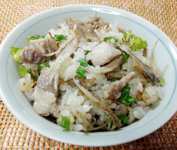

鶏ゴボウの炊き込みご飯
- 調理時間：60分
- （一人当たり）
- カロリー：371kcal
- たんぱく質：10.4g
- 脂質：6.4g
- 炭水化物：62.9g
- 塩分：1.3g


＜2合分＞
- 米
- 2合
- ゴボウ
- 80g
- 鶏肉
- 1枚(120g位)
- ショウガ
- 1片
- ・酒
- 小さじ1
- ・しょうゆ
- 小さじ1/2
下味
- カブの葉
（三つ葉やネギでもよい） - 少々
- ・酒
- 大さじ1
- ・しょうゆ
- 小さじ2
- ・塩
- 小さじ2/3
- ・みりん
- 小さじ2
A


- 米は洗ってザルにあげる。鶏肉は小さめの一口大に切って、下味をからめる。
ゴボウはササガキにして水にさらした後、ザルにあげる。ショウガは千切りにする。カブの葉は小口切りにする。 - 炊飯器に、米、Aの調味料を加え、水を2合の分量まで入れる。
- ゴボウ、ショウガ、鶏肉を加えて炊く。
- 炊き上がったら、カブの葉を加えて全体を混ぜる。
鶏ゴボウの炊き込みご飯
鶏とゴボウはとても相性のよい食材で、甘辛く煮たり、お鍋にしたり、一緒に炒めたりとたくさんのレシピがあげられます。
相性の良さをうま味の観点から考えてみると、ゴボウはグルタミン酸が多く、鶏肉にはイノシン酸が多いことがわかります。うまみ成分は、それぞれ単独よりも組み合わせることで、飛躍的に強く感じられることが科学的に証明されています。これを「うま味の相乗効果」といいます。
とてもシンプルな材料で出来る簡単レシピです。ゴボウの香りと鶏肉の旨味をお楽しみください。